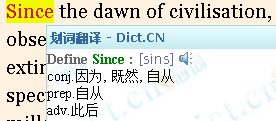
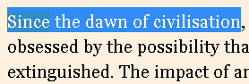

Hello to SG chrome plugin!
This plugin will automatically start online dictionary service from "dict.cn",and allow you to generate your word file
HOWTO:
step1.Double click or select a word,then this word will be highlighted,and the dictionary window will pop up
step2.Select several words as this word's demonstration sentence,then press ESC to save the sentence.
step3.Jump to step1 for the next word,or you can double click a highlighted word to cancel it.
step4.Finally,press ~ to download your word file